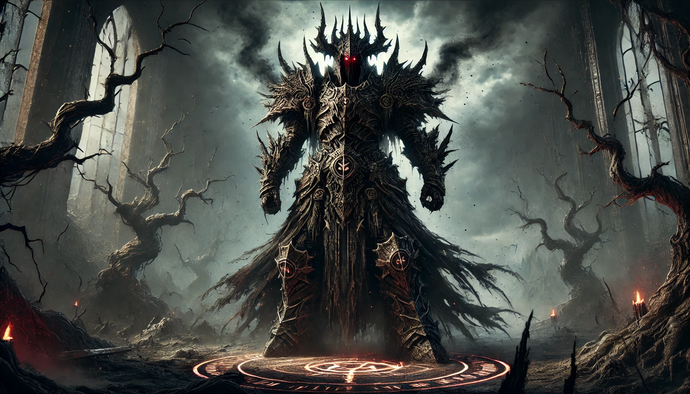

Adversario
 En las tierras de Eldoria, la paz es un bien preciado, siempre acechado por fuerzas oscuras que desean quebrantarla. En cada generación, surge un adversario, una figura envuelta en sombras y misterio, cuyo poder y ambición amenazan con consumir el reino. Este enemigo no es un mero villano, sino una encarnación del caos, la corrupción, o la venganza, cuyo propósito es arrasar con todo lo que Eldoria representa.
El Adversario es el centro del conflicto, el catalizador de la desesperación y la fuerza que une o divide a las casas nobles en su lucha por la supervivencia. Su nombre es pronunciado con temor, sus títulos son recordatorios de los horrores que ha traído, y sus motivaciones son un reflejo de los oscuros secretos que yacen enterrados en la historia de Eldoria.
Para enfrentarlo, los defensores del reino deben comprender su origen, descubrir sus tácticas, y desvelar la debilidad que puede ser su perdición. El Adversario no es solo un enemigo físico; es una amenaza que permea todos los aspectos de la vida en Eldoria, capaz de corromper lo puro, destruir lo sagrado, y manipular lo que parece inquebrantable.
A través de estas tablas, podrás dar vida a un adversario que pondrá a prueba el coraje, la inteligencia, y la voluntad de tus jugadores. Cada combinación de nombre, título, origen y motivación crea un villano único, diseñado para desafiar a los héroes de Eldoria en su lucha por preservar la luz en un mundo cada vez más oscuro.
¿Quién es esta sombra que se cierne sobre Eldoria? ¿Qué oscuros designios le mueven? Y lo más importante: ¿Podrán los defensores del reino descubrir su debilidad antes de que sea demasiado tarde?
Aquí tienes un conjunto de tablas organizadas en matrices, donde cada casilla representa una combinación específica de resultados al lanzar dos dados de 6 caras (2d6). Esto asegura que cada opción tiene la misma probabilidad de ser seleccionada. Puedes utilizar estas tablas para definir al adversario en "Eldoria: Defensores del Reino".
Tabla 1: Nombre del Adversario¶
| d6/d6 | 1 | 2 | 3 | 4 | 5 | 6 |
|---|---|---|---|---|---|---|
| 1 | Morgar | Zalathor | Kharak | Seraphis | Vardok | Nyxara |
| 2 | Morghul | Rasthar | Azgorath | Thalys | Kaelzor | Tyranis |
| 3 | Malakar | Nocturos | Zharak | Draxor | Korvath | Lythis |
| 4 | Velkar | Sargon | Balor | Calypsa | Darion | Verak |
| 5 | Tharn | Gryndor | Althar | Nexar | Zynthis | Vorn |
| 6 | Kragnar | Xandros | Velyra | Zalrax | Ignar | Mordain |
Tabla 2: Título del Adversario¶
| d6/d6 | 1 | 2 | 3 | 4 | 5 | 6 |
|---|---|---|---|---|---|---|
| 1 | el Oscuro | el Destructor | la Sombra Eterna | el Señor de las Bestias | la Reina de las Llamas | el Devorador de Almas |
| 2 | el Tirano | el Azote de los Cielos | el Heraldo del Fin | el Innombrable | el Emperador Maldito | la Sombra Sin Nombre |
| 3 | el Usurpador | el Portador de la Muerte | la Voz de la Desesperanza | el Conquistador | el Azote de las Tierras | el Rey de las Tinieblas |
| 4 | el Corruptor | el Señor del Abismo | la Serpiente del Caos | el Cazador Eterno | la Mano del Inframundo | el Señor de los Cadáveres |
| 5 | el Azote de las Almas | el Juggernaut | el Envenenador | el Invocador de la Muerte | el Destructor de Mundos | el Guardián de los Secretos |
| 6 | el Señor del Fuego | el Amo de la Niebla | el Amo del Engaño | el Maestro de las Sombras | el Acechador Eterno | el Devastador |
Tabla 3: Origen del Adversario¶
| d6/d6 | 1 | 2 | 3 | 4 | 5 | 6 |
|---|---|---|---|---|---|---|
| 1 | Las Tierras Desgarradas | El Reino de las Sombras | Las Profundidades del Abismo | Una Fortaleza Antigua y Olvidada | Un Plano Infernal de Fuego y Azufre | El Corazón de un Bosque Maldito |
| 2 | Las Ruinas de una Civilización Extinta | El Desierto de las Almas Perdidas | Un Reino Subterráneo | Una Isla Flotante en el Mar de los Lamentos | Una Necrópolis en las Tierras Muertas | El Portal a un Mundo Destruido |
| 3 | Un Plano de Sombras | El Reino de las Bestias | Las Tierras del Caos | Un Castillo en el Fin del Mundo | Un Palacio en un Plano de Fuego | La Fortaleza Flotante de Hielan |
| 4 | La Caverna de los Susurros | Un Reino Sumergido Bajo las Aguas | El Bosque de las Almas Perdidas | Las Montañas de la Perdición | Una Ciudadela Olvidada en las Montañas | El Valle de las Sombras |
| 5 | El Reino de los Demonios | El Vacío Entre los Mundos | El Templo de la Oscuridad Eterna | La Cripta del Rey Olvidado | La Isla de los Sueños Rotos | La Torre del Destino |
| 6 | La Ciudad del Viento Eterno | El Mar de las Almas Perdidas | Un Refugio en las Estrellas | Un Valle en las Tierras Muertas | Una Fortaleza en el Horizonte Perdido | La Sombra de una Luna Destruida |
Tabla 4: Motivo para Atacar Eldoria¶
| d6/d6 | 1 | 2 | 3 | 4 | 5 | 6 |
|---|---|---|---|---|---|---|
| 1 | Venganza por una Antigua Traición | Conquistar Eldoria para Expandir su Dominio Oscuro | Recuperar un Artefacto Perdido en Eldoria | Destruir a los Descendientes de una Orden Ancestral | Subyugar a Eldoria y Esclavizar a su Población | Corromper el Reino para Convertirlo en un Nuevo Bastión del Mal |
| 2 | Unir Eldoria a su Imperio Oscuro | Evitar una Profecía que Predice su Caída | Reclamar Eldoria como el Centro de un Nuevo Culto Oscuro | Despertar a un Antiguo Mal Sellado bajo las Tierras de Eldoria | Obtener Inmortalidad mediante un Ritual en Eldoria | Convertir Eldoria en un Reino de la Muerte |
| 3 | Recuperar un Trono Perdido | Vengar la Destrucción de su Reino | Destruir el Último Bastión de la Luz | Crear un Imperio de Oscuridad en Eldoria | Reescribir la Historia para Borrar la Existencia de Eldoria | Sacrificar Eldoria para un Ritual de Oscuridad |
| 4 | Robar la Magia Ancestral de Eldoria | Usurpar el Poder de los Nobles de Eldoria | Consumir el Reino en Llamas Eternas | Corromper las Aguas Sagradas de Eldoria | Destruir el Linaje Real de Eldoria | Recuperar un Arma Perdida en las Tierras de Eldoria |
| 5 | Invadir y Destruir la Cultura de Eldoria | Romper el Sello que Encierra a un Dios Oscuro | Aniquilar a los Defensores del Reino | Reconquistar las Tierras Perdidas por su Ancestro | Usar Eldoria como Puerta hacia Otras Dimensiones | Reducir Eldoria a Cenizas para Aumentar su Propio Poder |
| 6 | Destruir la Fuente de Poder de Eldoria | Robar la Riqueza Ancestral Oculta en Eldoria | Extinguir toda la Vida en Eldoria | Convertir Eldoria en un Reino de Esclavos | Corromper el Árbol de la Vida de Eldoria | Usar el Reino de Eldoria para Reanimar un Ejercito de No-Muertos |
Tabla 5: Tácticas del Adversario¶
| d6/d6 | 1 | 2 | 3 | 4 | 5 | 6 |
|---|---|---|---|---|---|---|
| 1 | Infiltración y Corrupción | Asedios y Asaltos Directos | Guerra de Guerrillas | Invocación de Criaturas Oscuras | Propagación de Plagas y Maldiciones | Manipulación de Alianzas |
| 2 | Dominación Psicológica y Terror | Destrucción Sistemática de Recursos | Creación de Ejércitos de Monstruos | Control de la Climatología | Creación de Portales para Movilizar Tropas | Soborno y Corrupción Política |
| 3 | Usar la Mente y las Ilusiones | Desgastar las Defensas con Ataques Constantes | Bloqueos Económicos | Invasión Rápida y Decisiva | Dividir y Conquistar | Chantaje y Manipulación de Líderes |
| 4 | Manipulación de la Fe | Sacrificios Humanos para Incrementar su Poder | Magia Ancestral para Corromper la Naturaleza | Emboscadas y Ataques Sorpresa | Aprovechar la Desunión entre los Nobles | Usar Espías para Desestabilizar el Reino |
| 5 | Propagar Herejía para Desmoralizar | Lanzar Maldiciones sobre los Líderes | Dominar a las Criaturas Salvajes | Destruir el Apoyo Popular | Reclutar a Descontentos del Reino | Atacar Rutas de Suministro |
| 6 | Controlar los Sueños y Miedos | Emplear Magia Oscura para Crear Devastación | Asesinar a los Nobles y Líderes Clave | Crear Desconfianza con Falsas Acusaciones | Corromper con Ofertas de Poder | Crear un Culto Secreto para Dividir al Reino |
Tabla 6: Recurso Principal del Adversario¶
| d6/d6 | 1 | 2 | 3 | 4 | 5 | 6 |
|---|---|---|---|---|---|---|
| 1 | Un Ejército Interminable de No-Muertos | Bestias y Criaturas Gigantescas | Poderosas Hordas Bárbaras | Cultistas Fanáticos | Magos Oscuros y Hechiceros Poderosos | Espías y Asesinos Altamente Entrenados |
| 2 | Guerreros con Armaduras Imbuidas en Magia Oscura | Un Coloso Ancestral Traído de las Profundidades | Dragones Corruptos al Servicio del Enemigo | Un Ejército de Autómatas Oscuros | Entidades Infernales de un Plano Oscuro | Un Ejército de Elementales Corruptos |
| 3 | Criaturas de la Oscuridad Invocadas | Bestias Corruptas Controladas por Magia | Un Ejercito de Sombra y Sombras | Espectros Vengativos | Seres Demoníacos | Espíritus Oscuros |
| 4 | Un Golem Ancestral de Gran Poder | Legiones de No-Muertos con Espadas Malditas | Un Ejercito de Guerreros Caídos | Serpientes Gigantes de un Mundo Oscuro | Bestias del Inframundo | Dragones Negros |
| 5 | Almas Corruptas de un Mundo Perdido | Guerreros No-Muertos | Caballeros del Abismo | Criaturas Bestiales Criadas por la Magia Oscura | Espíritus de la Tierra Oscura | Golems de Piedra y Hueso |
| 6 | Demonios Elementales | Criaturas Venenosas Crecidas en el Reino Oscuro | Guerreros Salvajes de un Reino Perdido | Seres de la Oscuridad Criados para la Guerra | Serpientes Gigantes con Magia Oscura | Guerreros Salvajes Corrompidos por la Magia Oscura |
Tabla 7: Debilidad del Adversario¶
| d6/d6 | 1 | 2 | 3 | 4 | 5 | 6 |
|---|---|---|---|---|---|---|
| 1 | Una Reliquia Sagrada Perdida en Eldoria | El Amor por una Figura que Aún Puede Salvarlo | Su Arrogancia que lo Hace Subestimar a sus Enemigos | Dependencia de un Poder Oscuro que Puede Ser Neutralizado | Un Artefacto Oscuro que, si se Destruye, Debilitará su Poder | Un Antiguo Pacto que lo Obliga a Cumplir Ciertas Reglas |
| 2 | Su Propia Creación, la Cual Esconde un Fallo Fatal | Un Guardián Traidor Dentro de sus Propias Filas | Un Lugar Sagrado en Eldoria que Puede Neutralizar su Magia | Un Héroe Profetizado que Posee el Poder de Derrotarlo | Una Fuente de Poder Oscuro que Puede Ser Destruida o Corrompida | Un Lugar en Eldoria donde su Poder es Nulo |
| 3 | Un Hechizo de la Luz Olvidado por Siglos | Una Profecía que Predice su Derrota | Su Propia Magia que Puede Volverse en su Contra | Un Arma Perdida que Puede Derrotarlo | La Luz del Amanecer que Puede Debilitarlo | Un Estandarte Perdido que Da Esperanza a sus Enemigos |
| 4 | Un Altar Antiguo que puede Destruirlo | Una Espada Sagrada que lo Mata en un Solo Golpe | Un Guerrero Legendario que Puede Acabar con su Vida | El Sacrificio de un Héroe en un Lugar Sagrado | Un Árbol Antiguo que Mantiene su Vida | Una Canción Ancestral que lo Debilita |
| 5 | Una Llave Perdida que Puede Sellarlo por Siempre | Un Escudo Ancestral que Puede Resistir su Poder | Una Oración Antigua que Puede Debilitarlo | Una Historia Perdida que Predice su Caída | Un Ojo que Puede Ver sus Debilidades | Un Santo Perdido que puede Derrotarlo |
| 6 | Un Anillo Oscuro que lo Controla | Una Voz Ancestral que lo Puede Calmar | Un Rito Olvidado que Puede Encadenarlo | Una Lágrima de Sangre que Puede Destruirlo | Un Fragmento de su Alma Escondido en Eldoria | Una Llama Sagrada que Puede Convertirlo en Cenizas |
Ejemplo de Adversario Generado¶
Usando estas tablas, aquí tienes un ejemplo de un adversario generado:
- Nombre: Kaelzor
- Título: el Heraldo del Fin
- Origen: Las Tierras Desgarradas
- Motivo para Atacar Eldoria: Corromper el Reino para Convertirlo en un Nuevo Bastión del Mal
- Tácticas: Infiltración y Corrupción
- Recurso Principal: Un Ejército Interminable de No-Muertos
- Debilidad: Una Reliquia Sagrada Perdida en Eldoria
Cómo Usar Estas Tablas¶
Lanza dos dados de 6 caras (2d6) para cada tabla y usa las combinaciones obtenidas para crear un enemigo único y desafiante que encaje perfectamente en la narrativa de Eldoria: Defensores del Reino. Cada tirada te da la oportunidad de generar una historia y un adversario diferente, asegurando que cada campaña sea única y memorable.
Esto es un test